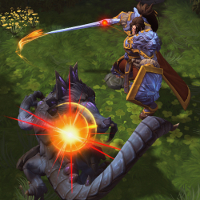
Varian
Welcome to our Varian guide for Heroes of the Storm. Here you will learn everything you need to know in order to play Varian in a competitive environment, whether you play on your own or with a team.
Protection Build
| Level 1 | Level 4 | Level 7 | Level 10 | Level 13 | Level 16 | Level 20 |
|---|---|---|---|---|---|---|
| 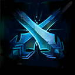 | 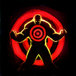 | 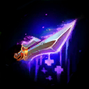 | 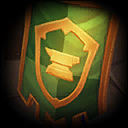 | 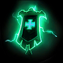 |
Unlike his other two Heroic Abilites, Taunt Icon Taunt causes Varian to become a stalwart Tank who is capable of peeling for his backline, while at the same time posing a serious threat to enemy Assassins and Specialists.
While his early game talents all revolve around his Parry Icon Parry ability, his later talents at Level 13, 16, and 20 are interchangeable. Depending on the situation you find yourself in, both Banner of Dalaran Icon Banner of Dalaran and Banner of Ironforge Icon Banner of Ironforge can be viable choices. Since Varian is such a highly adaptive Hero to play, we thoroughly recommend reading our in-depth talents section.
Arms Build
| Level 1 | Level 4 | Level 7 | Level 10 | Level 13 | Level 16 | Level 20 |
|---|---|---|---|---|---|---|
| 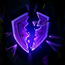 | 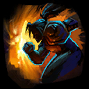 | 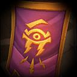 |
The Arms Build turns Varian into a highly explosive melee Assassin, who excels at marking enemy priority targets using Colossus Smash Icon Colossus Smash and unleashing a large amount of damage within split seconds to take them down as swiftly as possible. Similar to Tyrande's Hunter's Mark Icon Hunter's Mark, Colossus Smash applies Vulnerable to Varian's chosen target, which causes nearby allies to also deal increased damage on the target. As such, it is crucial to let your team know which target you are about to attack. Thus, we strongly recommend using ingame ping commands before leaping onto the enemy in order to guarantee immediate follow-up damage.
Keep in mind that Colossus Smash Icon Colossus Smash can (and should!) also be used against non-Heroic enemies, such as Mercenaries and Bosses in order to take them down much quicker. Due to the Heroic Ability's low cooldown, we definitely recommend doing so in order to save precious seconds, especially if you suspect the enemy team to be close by.
Fury Build
| Level 1 | Level 4 | Level 7 | Level 10 | Level 13 | Level 16 | Level 20 |
|---|---|---|---|---|---|---|
| 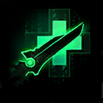 | 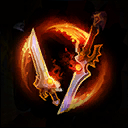 |
Varian's Fury Build turns him into a deadly melee Assassin, providing him with an outstanding amount of self-sustain thanks to Second Wind Icon Second Wind at Level 7. Combined with the attack speed buff from his Twin Blades of Fury Icon Twin Blades of Fury Heroic Ability, Second Wind allows Varian to clear Mercenary and even Boss Camps all by himself without taking too much damage.
All in all, Varian compares in many ways to Sonya when going for the Fury Build. Constant movement is crucial in order to become harder to lock down by the enemy team. Despite the fact that Varian is one of the strongest duelists in the game, especially after picking Twin Blades of Fury at Level 10, it is important to know when to engage and when to retreat. Do not dive into the enemy team's backline without your Tank in your vicinity and avoid chasing blindly into the enemy territory at all costs!
Go Back